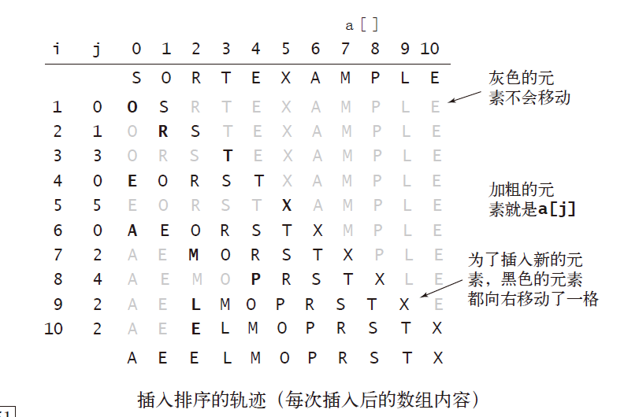
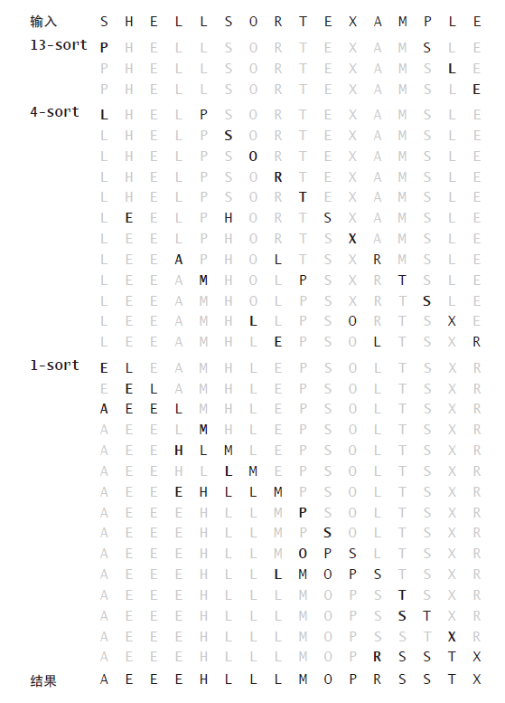
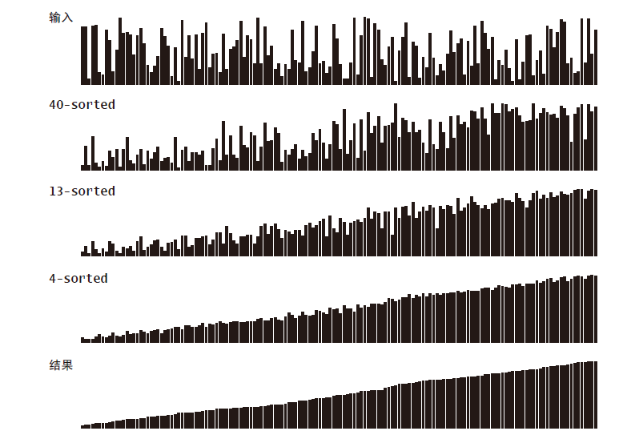

排序通常是数据处理中最先要做的一步，也是耗时大户。《算法4》中的这一章，主要是学习几种经典的排序算法。第一部分为初级排序算法，将学习两种基础算法以及其中的变体。
游戏规则
元素与主键
排序算法关注的排序对象为数组元素，每一个元素有一个对应的主键。
在Java中主键的抽象描述是通过实现Comparable接口完成的。
算法类API
解决这一排序问题的算法以类的形式出现，具有一些通用的方法。下面列出“排序算法类模板Example”的API。
- sort（）用于排序
- less（）比较两个元素大小
- exch（）交换元素位置
- isSorted（）判断是否是有序数组
- show（）按顺序打印数组
- main（）测试用例
1 | public class Example |
排序算法评价方法
验证
使用isSorted（）来判断算法是否成功。
1 |
|
时间
需要计算的成本包括数组元素的交换、比较的次数，对于不交换元素的算法，则计算其访问数组的次数。实际测试以随机输入来进行性能比较。
空间
算法在额外空间消耗指标上的表现可以将其分为两类：
- 原地排序算法： 除了函数调用所需的栈和固定数目的实例变量之外无需额外内存
- 其他排序算法：需要额外空间来存储另一份数组副本
数据类型的实现
Java中实现排序功能的数据类型都实现了Comparable接口，具体到自己实现的数据类型，只需要实现compareto（）这个方法即可，该方法定义了目标类型对象的自然排序。Java中的原始数据类型的包装类Integer Double等都实现了这一个接口。
一个示例：
1 | public class Date implements Comparable<Date> |
compareTo（）方法通常返回-1，0，+1三种结果，对应调用者小于，等于，大于被调用元素。如果调用者和被调用元素无法比较大小则会抛出异常。
该方法的实现时需要保证：
- 自反性 v=v
- 反对称性 v < w —> w > v
- 传递性 v < w w < p —> v < p
实现这三个特性是比较自然的，意义也比较明确。
选择排序
一种最简单的排序算法是这样的：首先，找到数组中最小的那个元素，其次，将它和数组的第一个元素交换位置（如果第一个元素就是最小元素那么它就和自己交换）。再次，在剩下的元素中找到最小的元素，将它与数组的第二个元素交换位置。如此往复，直到将整个数组排序。这种方法叫做选择排序，因为它在不断地选择剩余元素之中的最小者。
选择排序的特点是
- 排序时间与输入无关。一个数组是否有序并不能影响排序的时间，排序时间只和数组的规模有关。数组大小为N时，将进行$\frac{N^{2}}{2}$次比较和$N$次元素交换。其他算法通常会利用数据的输入状态。
- 数据移动的次数是最少的。交换次数和数组大小是线性关系，这与其他的算法有着鲜明的区别（一般交换的次数都是线性对数或者平方级别）。
1 | public class Selection |
插入排序
通常人们整理桥牌的方法是一张一张的来，将每一张牌插入到其他已经有序的牌中的适当位置。在计算机的实现中，为了给要插入的元素腾出空间，我们需要将其余所有元素在插入之前都向右移动一位。这种算法叫做插入排序.
与选择排序一样，当前索引左边的所有元素都是有序的，但它们的最终位置还不确定，为了给更小的元素腾出空间，它们可能会被移动。但是当索引到达数组的右端时，数组排序就完成了。
和选择排序不同的是，插入排序所需的时间取决于输入中元素的初始顺序。例如，对一个很大且其中的元素已经有序（或接近有序）的数组进行排序将会比对随机顺序的数组或是逆序数组进行排序要快得多。
对于随机排列的长度为N 且主键不重复的数组，平均情况下插入排序需要～ $\frac{N^2}{4}$ 次比
较以及～ $\frac{N^2}{4}$ 次交换。最坏情况下需要～ $\frac{N^2}{2}$ 次比较和～$\frac{N^2}{2}$次交换，最好情况下需要$N-1$次比较和$0$次交换。
1 | public class Insertion |
和冒泡的排序方法总觉得有些类似，它是按照索引向前不断将索引左侧的数据进行冒泡一样的排序，把最小值或最大值运往最左侧。索引左侧永远是个完成好的排序工作。

插入排序很擅长处理基本上有序的数组，它可能比其他任何算法都要擅长处理
基本有序的数组：
- 每个元素都距离最终的位置不远
- 一个有序的大数组接一个小数组
- 数组中只有几个元素位置不正确
插入排序需要的交换操作和数组中倒置的数量相同，需要的比较次数大于等于倒置的数量，小于等于倒置的数量加上数组的大小再减一
希尔排序 Shell Sorting
希尔排序是插入排序的一种改进，将原本的步长为1扩大为h，我觉得可以理解为将一个无序的大数组先变成若干个有序的小数组，然后再逐渐合并这些小数组（降低h），直至h=1时达到与插入排序相同的效果。
研究希尔排序性能需要的数学论证超出了本书范围
希尔算法在最差情形下也小于平方级别，大约是1.5次级别，对它严格的数学推导到目前为止也是难题，但大量的实验证明了它比插入排序的速度要快很多，而且数据的规模越大它的优势也就越大。
1 |
|

